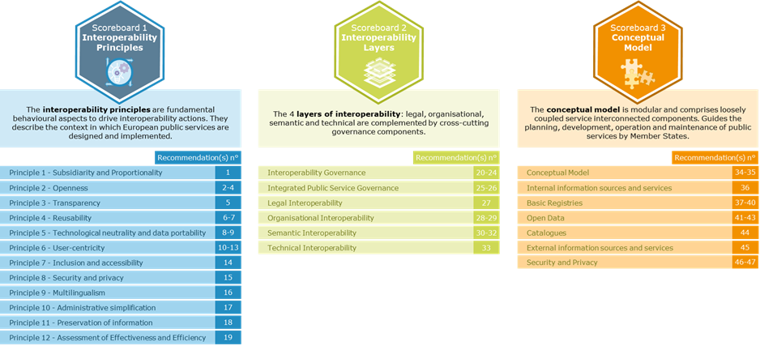
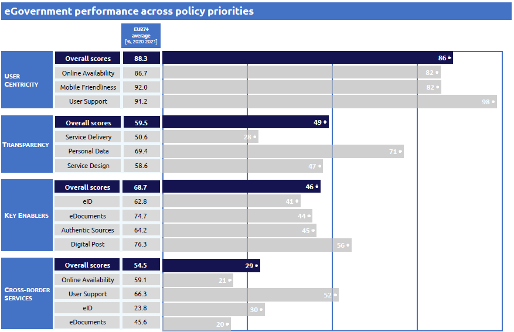

Digital Public Administration factsheet 2021
Greece
Digital Public Administration Factsheet 2022
Table of Contents
2 Digital Public Administration Highlights 10
3 Digital Public Administration Political Communications 12
4 Digital Public Administration Legislation 23
5 Digital Public Administration Governance 31
6 Digital Public Administration Infrastructure 37
7 Cross Border Digital Public Administration Services for Citizens and Businesses 54
Country
Profile
1
Country Profile
Digital Public Administration Indicators
The following graphs present data for the latest Generic Information Society Indicators for Greece compared to the EU average. Statistical indicators in this section reflect those of Eurostat at the time the Edition is being prepared.
Percentage of individuals using the internet for interacting with public authorities in Greece | Percentage of individuals using the internet for obtaining information from public authorities in Greece |
Percentage of individuals using the internet for downloading official forms from public authorities in Greece | Percentage of individuals using the internet for sending filled forms to public authorities in Greece |
Interoperability State of Play
In 2017, the European Commission published the European Interoperability Framework (EIF) to give specific guidance on how to set up interoperable digital public services through a set of 47 recommendations. The picture below represents the three pillars of the EIF around which the EIF Monitoring Mechanism was built to evaluate the level of implementation of the EIF within the Member States. It is based on a set of 71 Key Performance Indicators (KPIs) clustered within the three main pillars of the EIF (Principles, Layers and Conceptual model), outlined below.

Source: European Interoperability Framework Monitoring Mechanism 2021
Source: European Interoperability Framework Monitoring Mechanism 2021
Source: European Interoperability Framework Monitoring Mechanism 2021
Source: European Interoperability Framework Monitoring Mechanism 2021
eGovernment State of Play
The graph below presents the main highlights of the latest eGovernment Benchmark Report, an assessment of eGovernment services in 36 countries: the 27 European Union Member States, as well as Iceland, Norway, Montenegro, the Republic of Serbia, Switzerland, Turkey, Albania and Macedonia (referred to as the EU27+).
The study evaluates online public services on four dimensions:
- User centricity: indicates the extent to which a service is provided online, its mobile friendliness and its usability (in terms of available online support and feedback mechanisms).
- Transparency: indicates the extent to which governments are transparent about (i) the process of service delivery, (ii) policy making and digital service design processes and (iii) the personal data processed in public services.
- Cross-border services: indicates the extent to which users of public services from another European country can use the online services.
- Key enablers: indicates the extent to which technical and organizational pre-conditions for eGovernment service provision are in place, such as electronic identification and authentic sources.
The 2022 report presents the biennial results, achieved over the past two years of measurement of all nine life events used to measure the above-mentioned key dimensions. More specifically, these life events are divided between seven ‘Citizen life events’ (Starting a small claim procedure, Moving, Owning a car, Health measured in 2021, and Career, Studying, Family life, measured in 2020) and two ‘Business life events’ (Regular Business Operations, measured in 2021, and Business start-up, measured in 2020).

Source: eGovernment Benchmark Report 2022 Country Factsheets

Digital Public Administration Highlights
2
Digital Public Administration Highlights
Digital Public Administration Political Communications |
An updated National Broadband Plan was prepared and issued for public consultation in October 2021. The new plan is aligned with the European Connectivity Targets (Gigabit Society 2025 and Digital Compass 2030), and it includes a set of legislative measures as well as infrastructure deployment projects with public support. The anticipated public intervention will use funds from ESIF 2021-2027, RRF, CEF Digital and national resources. Moreover, a roadmap for the implementation of best practices proposed by the Connectivity Toolbox has been issued.
Digital Public Administration Legislation |
Law 4727/2020 (Government Gazette A’184/23.09.2020) on Digital Governance provides for the creation of a register of public administrative procedures and a citizen communication register and the provision of the necessary institutional framework for the digital transformation of the Greek public sector.
Digital Public Administration Governance |
The Ministry of Digital Governance brings together all the Information Technology and Telecommunications infrastructure related to the provision of digital services for citizens and businesses. It aims to provide the framework for citizens and businesses to benefit from an inclusive Digital Single Market.
Digital Public Administration Infrastructure |
The National Register of Procedures, recently renamed as “Mitos” (previously named “Diavlos”), has been established by article 90 of Law 4727/2020 and is kept at the General Secretariat of Digital Governance and Simplification of Procedures of the Ministry of Digital Governance. It is also part of the Single Digital Portal of Public Administration (gov.gr), with which it interoperates with respect to the processes carried out through it.
Digital Public Administration Political Communications
3
Digital Public Administration Political Communications
Specific political communications on digital public administration
Berlin Declaration on Digital Society and Value-Based Digital Government
In December 2020, the Greek government signed the Berlin Declaration on Digital Society and Value-Based Digital Government, thus re-affirming its commitment – together with other EU Member States – to foster digital transformation in order to allow citizens and businesses to harness the benefits and opportunities offered by modern digital technologies. The Declaration aims to contribute to a value-based digital transformation by addressing and strengthening digital participation and digital inclusion in European societies.
Action Plan on the Utilisation of Next Generation EU Resources
- Investing in renewable energies and the expansion of the mainland energy grid to cover island communities;
- Building a high-quality digital infrastructure and rolling out the 5G technology; and
- Fully digitalising the Independent Authority for Public Revenue (IAPR) to allow companies to digitally report their financial information to tax authorities.
Digital Transformation Bible (2020–2025)
- Safe, fast, and reliable access to the internet for all;
- A digital State offering better digital services to all citizens in all spheres of life;
- Development of digital skills for all citizens;
- Facilitation of the digital transformation of enterprises;
- Support and strengthening of digital innovation;
- Making productive use of public administration data; and
- Incorporation of digital technologies in all economic sectors.
In July 2021, the Ministry of Digital Governance released the DTB by publishing a Ministerial Decision in the Official Government Gazette of 05.07.2021 (Issue B No. 2894/2021).
National Programme for Process Simplifications
The National Programme for Process Simplifications (EPAD) was established by Law No. 4635/2019. Under the supervision of the Prime Minister, the EPAD is the central intergovernmental framework aiming at the reduction of administrative burdens. It is the central government framework for inter-ministerial coordination, design and implementation of procedure reengineering and simplification for the public sector, aiming at reducing administrative burden and bureaucracy. The programme consists of three pillars of simplification, namely:
- Qualitative and friendly legislation;
- Simple and comprehensive procedures; and
- Citizen engagement.
Currently, all necessary actions include the elaboration, coordination, and implementation of the EPAD on certain vertical policies (i.e. transport, justice, naturalisation, etc.).
Bureaucracy Observatory
Greek National Coalition for Digital Skills and Jobs
Established in May 2018, the Greek National Coalition for Digital Skills and Jobs is a synergy between various entities, public or otherwise, which seek to promote digital skills in Greek society. The objectives of the National Coalition are: to facilitate cooperation between all parties, to introduce actions with the aim of enhancing digital skills, and to address the digital gap in every sector of the Greek economy and society. To achieve the above-mentioned objectives and in accordance with the European Commission’s Digital Skills and Jobs Coalition, the following four target groups have been identified:
- Education: enrichment and digital transformation of the learning and teaching process for pupils and students. Integral to this effort is the provision of incentives for the continuing training of teachers;
- Training: development of employees, unemployed and businessmen’s digital skills to promote digital economy;
- Information and communications technology professionals: promotion of high-level digital skills for ICT professionals in all industry sectors; and
- Citizens: the objective is to enhance all citizens’ digital skills to enable them to be active in a digital society.
In particular, as part of the National Coalition for Digital Skills and Employment (National Coalition), the Ministry of Digital Governance, the Ministry of Interior and the National Centre for Public Administration and Local Government are organising a series of training programmes aimed to upgrade the digital skills of civil servants.
The educational programmes are interactive, as alongside the constant presence and guidance of trainers, they also include practical workshops (online labs). Participation in the programmes as well the corresponding certification are free of charge and the training is conducted in Greek and English.
The pilot phase of the programme was completed in June 2021 and saw the participation of 500 civil servants (IT executives that received training in cloud services) who attended 25 training programmes. The first phase of the main programme, which includes 3 000 civil servants, started in December 2021 and is scheduled to be completed in June 2022.
Other initiatives include:
- Certified vocational training programme for unemployed aged 18-29 by OAED and Google: the programme is part of the initiative Grow Greece with Google. Over 2 600 unemployed registered to OAED (the Greek organisation for labour employment). The candidates, who are aged up to 29 years old and at least secondary-school graduates, will participate in the free remote vocational training programme implemented by OAED and Google Greece, which includes free certified trainings in the four following areas of digital literacy: (i) IT Support Specialist Certificate (ii) UX Designer Certificate (iii) Project Manager Certificate (iv) Data Analyst Certificate. By completing this programme, the beneficiaries can also participate in programmes of subsidised work experience, planned by the OAED.
- Elements of AI: a series of free online courses introducing all citizens to Artificial Intelligence (AI). The online course ‘’ is the first part of the course ‘Elements of AI’. It was available free of charge in Greek until December 2021 and was addressed to all those interested in learning and understanding the basics of AI and the ways in which it can be used in everyday life. In April 2022, the National Coalition released the second part of the ‘Elements of AI’ course, titled ‘Building AI’, available to the Greek public for free until December 2022. The aim of the course is for the trainees to discover the methods of AI and the solutions offered by technology in various areas of everyday life, but also to improve the AI-related vocabulary and skills.
- OAED-Cisco cooperation for vocational training of unemployed in cybersecurity: the programme was designed for those interested in working in the field of information technology and specialising in cybersecurity. It is offered in Greek and is provided free of charge by Cisco Hellas to OAED, within the framework of corporate social responsibility. Upon successful completion, the trainees obtain a Certificate of Integration and a Digital Badge. The programme concerns the training of 3 000 unemployed persons, enrolled in the OAED register, aged 18 or over, at least secondary school graduates, with some computer knowledge.
- EU Code Week: for the ninth year, the European Code Week was held in October 2021 with the support of the National Coalition for Digital Skills & Employment and a total of 2 283 events took place. For the first time in 2021 the EU Code Week Hackathon was organised in Greece by the European Commission and the four Greek Code Week Ambassadors with the contribution of many sponsors who offered sponsorships in the form of mentoring and webinars to prepare participants.
- Cooperation between OAED and Amazon for digital skills development: OAED and Amazon Web Services (AWS) signed a Memorandum of Cooperation to take joint actions to address the digital labour market gap effectively, with special emphasis on literacy of digital cloud services. This training will lead to corresponding certification by AWS, a leading company worldwide in terms of the development of cloud computing services and the acquisition of skills that are highly demanded by companies in Greece. The first joint action, which started on 26 November 2021 and ended on 10 December 2021, included free training for registered unemployed, with the implementation of an online training programme on "AWS Cloud Practitioner Essentials".
- Pillar 1: Green Transition;
- Pillar 2: Digital Transformation;
- Pillar 3: Employment, skills and social cohesion; and
- Pillar 4: Private Investments and Transformation of the economy.
National Strategy on Broadband
An updated National Broadband Plan was prepared and issued for public consultation in October 2021. The new plan is aligned with the European Connectivity Targets (Gigabit Society 2025 and Digital Compass 2030) and it includes a set of legislative measures as well as infrastructure deployment projects with public support. The anticipated public intervention will use funds from ESIF 2021-2027, RRF, CEF Digital as well as national resources. Moreover, a roadmap for the implementation of best practices proposed by the Connectivity Toolbox has been issued.
The Rural Broadband project, awarded in the framework of the 2017 European Broadband Awards provides broadband infrastructure coverage to almost 45% of Greek territory in specific rural areas, providing 95.96% of the population with a speed of minimum 30Mbps in the three geographical areas.
The Superfast Broadband (SFBB) project is a demand voucher scheme with a EUR 50 million budget that subsidises citizens to obtain a new broadband connection (or upgrade an existing one) to at least 100Mbps (readily upgradable to 1Gbps).
The Ultrafast Broadband project is a major scale intervention of the National Broadband Plan 2014-2020 with a EUR 700 million total budget. It includes an aid scheme that was approved on 31 July 2019 (SA.53135). The project will be implemented in areas that are mutually exclusive with regards to the SFBB and Rural Broadband (RB) projects. The newly deployed infrastructure will bring significant new capabilities to the market in terms of broadband service availability and capacity, speed, and the level of competition. In particular, the notified measure aims to ensure 100Mbps availability to most of the covered area, exceeding 98% of the active lines and 75% of the settlements, while ensuring gigabit upgradability.
The WiFi4GR project, with a EUR 15 million budget, is subject to a framework agreement for the supply, installation, configuration, and operation of 5 600 wireless access points that will be installed in 2 500 areas across the country over the period of three years. Citizens will be provided with free and non-discriminatory broadband internet access via outdoor and indoor Wi-Fi Hotspots.
Fourth National Action Plan on Open Government 2019–2021
- Public participation;
- Open public data; and
- Integrity and accountability.
Interoperability
National Digital Strategy for Interoperability
The National Digital Strategy for Interoperability is outlined in the Digital Transformation Bible 2020–2025. Specific guidelines are provided to help accomplish interoperability in all technical, semantic, organisational, and legal dimensions, both at national and international level and for various policy areas. Moreover, dedicated structures such as the Interoperability Centre, tasked with the coordination of all base registries as well as departments responsible for interoperability policy coordination and implementation, have been created to implement effective, citizen-centric cross-border digital services.
The strategy also outlines strategic planning that incorporates important policy projects, such as the alignment of the new European Interoperability Framework with the national framework, the implementation of a horizontal governance model, and projects that target the sectoral level for the implementation of interoperable digital services.
eGovernment Interoperability Framework
The implementation of the Greek eGovernment Interoperability Framework (Greek eGIF), institutionalised by State Law No. 3882/2010, began on 28 October 2006. The project was carried out within the framework of the Operational Programme of the Information Society (OPIS) and aimed to define standards, specifications and rules for the development and deployment of web-based front- and back-office systems for the Greek public administration at national and local level.
Since the end of November 2021, the Ministry of Digital Governance has been working on the update of the existing National Interoperability Framework. In this process, all relevant stakeholders have been invited and have taken an active part in shaping the new framework, in order to better address the existing challenges and to be more effective. The project is expected to be completed in May 2022 and for the first time the deliverables will include, in addition to the updated National Interoperability Framework, also a comprehensive governance model and a practical implementation guide. Furthermore, a new portal is being developed to host the new national interoperability framework and to act as a knowledge base for interoperability issues at national and European level.
Digital Authentication Framework
The Digital Authentication Framework aims to effectively support eGovernment at central, regional and local level, and contributes to achieving interoperability at information system, procedure and data level. More specifically, the Framework sets the standards, procedures and technologies required for the registration, identification and authentication of eGovernment services users, including citizens, businesses, public authorities and civil servants. It also aims to create an integrated and coherent set of policies regarding digital certificates and public key infrastructures.
Certification Framework for Public Administration Sites and Portals
The Certification Framework for Public Administration Sites and Portals specifies the directions and standards to be followed by public agencies at central and local level when designing, developing and deploying the eGovernment portals of the public administration, and supporting eGovernment services.
Interoperability and Electronic Services Provisioning Framework
The Interoperability and Electronic Services Provisioning Framework defines the basic principles and the general strategy to be followed by public agencies when developing eGovernment information systems. It also provides organisational and semantic interoperability guidelines, as well as technical specifications and communication standards.
Key enablers
Access to public information
No political communication in this field was adopted to date.
eID and Trust Services
Cross-Checking Process
Recently, the General Secretariat of Public Administration Information Systems initiated a process for cross-checking and correlating base registries as a key step to achieve the implementation of eID and trust services. The cross-checking process is specified in Articles 48 and 53 of Law No. 4623/2019 (Government Gazette 134/A/9-8-2019).
Security aspects
National Cybersecurity Strategy 2020–2025
In December 2020, the National Cybersecurity Authority of the Ministry of Digital Governance issued an upgraded National Cybersecurity Strategy for 2020–2025. The new strategic framework includes, inter alia, an in-depth assessment of the current situation, the identification of new challenges and critical success factors, the mapping of key stakeholders, as well as a concrete action plan with flagship activities, milestones, and indicators to implement the following strategic objectives:
- A functional cybersecurity governance system;
- Shielding critical infrastructures and securing new technologies;
- Incident management optimisation, fight against cybercrime and privacy protection;
- A modern environment for cybersecurity investments with emphasis on the promotion of research and development; and
- Capacity building, promoting information and awareness raising.
The National Cybersecurity Strategy 2020–2025 is being implemented with a yearly plan which incorporates an array of approaches, such as policies, legislative initiatives and targeted investments, carried out by the National Cybersecurity Authority in collaboration with other competent authorities and academic/research institutions.
All in all, the NCSS 2020–2025, is an indispensable tool for digital technologies utilization, as well as building confidence and trust in digital transformation among citizens and businesses.
Interconnection of base registries
Service Level Agreement
A Service Level Agreement was signed between the General Secretariat of Information Systems for Public Administration and the Ministry of Internal Affairs regarding the Citizens Registry.
eProcurement
Ministerial Decisions on eProcurement
Following the amendments of Law No. 4782/2021 (Government Gazette 36/A/9-3-2021) on the modernisation, simplification and reformation of Public Procurement Law No. 4412/2016 (Government Gazette 147/A/8-9-2016), the Ministry of Development and Investments issued, in corporation with the Ministry of Digital Governance and the Ministry of Infrastructures and Transportation, a series of Joint Ministerial Decisions amending accordingly the functioning of the National Electronic Public Procurement System (Government Gazette JMD 2453/B/9-6-2021 and JMD 2813/B/30-6-2021) and the Central Electronic Registry of Public Procurement (Government Gazette JMD 3075/B/13-07-2021).
Domain-specific political communications
Single Digital Map
- Terms and restrictions of construction;
- Land use;
- City plans;
- Plot and building lines;
- Land parcels;
- Forests;
- Natura 2000 areas or special habitat protection areas;
- Seashore, beach and port areas;
- Waters, streams, wetlands, navigable rivers and large lakes;
- Archaeological sites or historical sites; and
- Traditional settlements or protected areas.
Once land registration is complete, the boundaries of all plots will be added. A draft law is being prepared to protect the rights of citizens with a legitimate interest in geospatial data, should a public service refuse to grant its approval.
National Action Plan for Gender Equality 2016–2020
- Social inclusion and equal treatment of women who suffer multiple discrimination;
- Gender-based violence;
- Labour market, family and work-life balance; and
- Education, training, culture, sports and media.
Emerging technologies
Artificial Intelligence (AI)
Declaration on Cooperation on Artificial Intelligence
National Strategy for AI
- National AI infrastructure: a key prerequisite for Greek organisations to adopt and fully leverage AI’s potential;
- AI for economy growth: exploiting AI to foster Greece’s economy development;
- Inclusive AI for citizens and society: ensuring that AI adoption in Greece embraces all citizens, no one excluded;
- AI made in Greece: positioning Greece not only as a passive consumer of AI technology, but also as an active innovator in the global AI ecosystem; and
- AI for public sector efficiency: deploying AI in the public sector to accelerate digital transformation.
The new national AI strategy provides a total of 66 recommendations.
Distributed ledger technologies
No political communication was adopted in this field to date.
Big data
No political communication was adopted in this field to date.
Cloud computing
No political communication was adopted in this field to date.
Internet of Things (IoT)
No political communication was adopted in this field to date.
High-performance computing
Declaration on Cooperation on QCI
High-speed broadband connectivity
Mobile Communications and 5G
The tender process, which was finalised after the completion of the public consultation and started in September 2020, was designed and implemented in a transparent and efficient manner and according to a strict schedule that was consistently adhered to. It is also to be noted that the procedure was fully compliant with the current European regulatory framework.
To facilitate the development of the 5G ecosystem, a State-run investment fund known as the Phaistos Funds was established. Its purpose is the investment in businesses (start-ups or otherwise) which are active in the research and/or development of %G-based-solutions. Eligible companies could be active in such sectors as transport, logistics, manufacturing, industry, defence, goods and utility networks, health, tourism, information, and media. The fund, established under the Greek Law No. 4727/2020, operates in the public interest in accordance with private economy rules for the service of special public purpose, as per the Fourth Part of Law No. 4389/2016 (Article 94) and of Law No. 4548/2018 (Article 104). It will be funded by 25% with the proceeds of the auction for 5G network frequencies. A parallel target is the participation of the private sector and the attraction of private funds with a value of up to 30% of the State revenue, corresponding to approximately EUR 30 million.
Other emerging technologies
Space Technologies and Applications
The Greek strategy in space matters aims to:
- Strengthen national security and defence, especially with the utilisation and development of space infrastructure;
- Develop the Greek space industry;
- Utilise space data and develop relevant applications; and
- Support space research and innovation.
The recent strategy on Digital Transformation 2020–2025 lays out the specific activities the government will undertake in relation to space activities as follows:
- Upgrade of the Hellenic Copernicus Collaborative Ground Segment;
- GOVSATCOM- GreeCom;
- Line of action for the development of 5G Networks;
- GOVSATCOM- GreeCom
- Fibre in the sky and ground infrastructures;
- Development of the Micro-Satellite Project;
- Applications of Secure Quantum Cryptography – EuroQCI; and
- National Experimental Infrastructure for the Quantum Key Distribution (QKD).
European Digital Innovation Hubs
The network of European Digital Innovation Hubs (EDIH) is expected to act as one-stop shop for innovation services using cutting edge digital technologies, such as test before invest, training and skills, financial advice and assistance to transformation of processes, products and services. Therefore, the digital opportunities and the technology advancement will be provided by this network and will be partially funded under the Digital Europe Programme (DEP) for the period 2021–2027.
In this context, the General Secretariats for Digital Governance and Process Simplification, Research and Innovation, and Labour launched an open call to designate the potential hubs. In this open call, the proposals were evaluated and finally 15 hubs were selected at the end of December 2020. These hubs are eligible to apply in the Commission’s upcoming restricted call.
Memorandum of Understanding on Cooperation and the Exchange of Best Practices in the field of Distributed Accounting Technology
Statement of Strategic Intent to form a Space Hub

Digital Public Administration Legislation
4
Digital Public Administration Legislation
Specific legislation on digital public administration
Law on Digital Governance
Law No. 4727/2020 (Government Gazette 184/A/23.09.2020) on Digital Governance (transposing into the Greek legislation Directive (EU) 2016/2102 and Directive (EU) 2019/1024) – Electronic Communications (transposing into the Greek law Directive (EU) 2018/1972) and other provisions contain numerous provisions regarding government digital services, such as:
- The creation of a personal number (PA) for citizens to allow for their formal identification in the provision of public services;
- The creation of an electronic registered delivery service for the private and public sectors;
- The creation of a Register of Public Administrative Procedures and a Citizen Communication Register;
- The strengthening of the Single Digital Portal gov.gr;
- The obligation to provide digital public services through the Single Digital Portal of Public Administration (gov.gr – EIP);
- The permanent establishment of new digital services that were introduced as a direct result of the COVID-19 public health crisis;
- The provision of the necessary institutional framework for the digital transformation of the Greek public sector and society;
- The development of measures pertaining to the Transparency Programme, public sector information, open data and other issues related to transparency and open government; and
- The introduction of the accessibility framework for the public sector’s websites and applications for mobile devices to render their services accessible to all users, including to persons with disabilities.
The purpose of Law No. 4727/2020 is to codify in a single text, the scattered and complex legislation on digital governance, while Article 108 repeals Articles 1 to 37 of Law No. 3979/2011.Law ‘I invest in Greece and other Provisions’
Law No. 4635/2019 (Government Gazette 167/A/30-10-2019) contains numerous provisions regarding government digital services, such as:
- The creation of the open Single Digital Map which will collect and centralise geospatial data, such as land use and building planning;
- The creation of a single digital public administration portal, ‘gov.gr’, which will gather all digital public services under one single portal;
- The implementation of the National Programme for Process Simplifications by the Ministry of Digital Governance to simplify administrative processes; and
- The precise procedure to be followed from 1 January 2021 for the compulsory electronic submission of applications to Administrative Courts.
Law on the Unified Mobility System in Public Administration and Local Government
Law No. 4440/2016 (Government Gazette 224/Α/2-12-2016) establishes permanent voluntary mobility of public sector personnel based on an electronic database and an evaluation procedure for submitted applications.
Interoperability
Law on Interoperability Organisation
Law No. 4623/2019 (Government Gazette 134/A/9-8-2019) provides, inter alia, articles dedicated to the interoperability of new organisational structures, roles, and responsibilities at cross-sectoral and national level.
Law on Digital Governance
Law No. 4727/2020 (Government Gazette 184/A/23.09.2020) on Digital Governance (transposing into the Greek legislation Directive (EU) 2016/2102 and Directive (EU) 2019/1024) – Electronic Communications (transposing into Greek law Directive (EU) 2018/1972) introduces provisions at various levels and for various issues for the implementation of effective interoperable digital services at national and international level.
Ministerial Decision Law on Operation of Interoperability Center
Ministerial Decision No. 118944/2019 (Government Gazette 3990/B/01.11.2019) defines the operation of the Interoperability Centre of the General Secretariat of Information Systems for Public Administration concerning the approval procedures and provision of online services among information systems of public bodies.
Key enablers
Access to public information
Law on Web Content Accessibility Guidelines
Law No. 4727/2020(Government Gazette 184/A/23.09.2020) on Digital Governance, integrates Directive (EU) 2016/2102 on the accessibility of the websites and mobile applications of public sector bodies into Greek legislation, aiming to safeguard the right to unobstructed and equal access of all citizens to electronic information, via the public sector bodies’ websites and mobile apps, as well as their production, exchange and dissemination. The law replaces Articles 1-13 of Law No. 4591/2019 on the accessibility of the websites and mobile applications of public sector bodies. In the context of Greece's relevant obligations, as an EU Member State, Greece submitted to the European Commission, on 23.12.2021, the report on the results of the first monitoring period of websites and mobile apps of the public sector bodies, published also on the official website of the .
Law No. 4780/2021 established the Greek National Accessibility Authority as an advisory body of the State on the subject of accessibility of persons with disabilities, in all areas of human activity with the mission of constant monitoring, the formulation of relevant proposals and public policies on the right of access for persons with disabilities. Its jurisdiction lies - among other things – into proposing the development of and updating accessibility standards in all areas, including the digital environment.
Law No. 4823/2021 introduces several provisions on the upgrade of schools and empowering teachers including the accessibility standards of school units’ websites.
Law on the Re-use of Greek Public Sector Information
The legislative framework on the re-use of public sector information comprises a set of laws implementing EU directives aiming at reusing different types of public sector information and increasing transparency in the activities of public sector authorities. In particular, in 2003 Greece implemented Directive 2003/98/EC of the European Parliament and of the Council. The transposing law was then amended in 2014 by Law No. 4305/2014.
Recently, via Law No. 4727/2020, the Directive (EU)2019/1024 on open data and the further use of public information sector was transposed into Greek law, bringing it up to speed with current EU developments.
Law on the Ratification of the Pension Rules of the Draft Financial Assistance Contract
Law No. 4336/2015 (Government Gazette 94/Α/14-08-2015) provides for the creation of a portal ensuring easy access to legislation for citizens, both in published form and in codified version. The aim is for citizens to be able to trace all legislation relevant to their case in a clear and concise manner.
eID and Trust Services
Electronic Signatures
Presidential Decree No. 150/2001 came into force on 25 June 2001, implementing Directive 1999/93/EC of 13 December 1999 on a community framework for electronic signatures. In addition to defining electronic signatures and advanced electronic signatures, the Presidential Decree also deals with the legal consequences of electronic signatures, the liability of suppliers of certification, the obligation to protect personal information, the specific terms for recognised certificates and suppliers, the liability for the creation of a signature and recommendations for the verification of the signature. The matter is expected to be reformed by 2020.
Regulation (EU) 910/2014 on electronic identification and trust services for electronic transactions in the internal market (eIDAS Regulation), adopted on 23 July 2014, provides a regulatory environment for secure and seamless electronic interaction between businesses, citizens and public authorities in the context of electronic services.
Trust Services
Law No. 4727/2020 defines the responsibilities related to trust services and outlines the operating framework of trust service providers. Moreover, it regulates the related procedures for the issuance and use of digital certificates issued by trusted service providers.
In compliance with the legislative act and Regulation (EU) 910/2014 (eIDAS), the approved digital signatures provided by the trust service providers are the legal equivalent of handwritten signatures in both substantive and procedural law. Furthermore, digital signatures provide secure communication and electronic transactions among public sector organisations, citizens, and businesses through internet applications.
In October 2020, the Hellenic Public Administration Certification Authority (APED) which is the trust service provider of the Greek Public Sector, successfully completed the audit and inspection of its management system and processes, according to the eIDAS Regulation. As a result, the Hellenic Telecommunications and the Post Commission renewed the license of APED and the right to be in the Trusted List of Qualified Trust Service Providers. APED began its operations, in its new form, in January 2022.
Security aspects
Law on the Protection of Individuals regarding the Processing of Personal Data
Law No. 4624/2019 (Government Gazette 137/A/27-8-2019) establishes additional measures for the implementation of the General Data Protection Regulation (GDPR) and incorporates Directive (EU) 2016/680. The law must be complied with by all public and private sector bodies/organisations that process personal data in the context of their activity. The GDPR imposes a number of new obligations on editors, which derive from basic principles and in particular the enhanced principle of transparency in the way data are collected, processed and stored, and the new accountability principle, according to which the data controller is responsible for demonstrating compliance with all the principles governing the processing of personal data. Also, new rights are introduced such as the right to be forgotten and the right to data portability.
Law on the Protection of Personal Data and Private Life about Electronic Telecommunications
Law No. 3471/2006 was adopted on 28 June 2006, revising Law No. 2472/1997 and aiming at setting preconditions with regard to personal data processing and the assurance of confidentiality in telecommunications. Law No. 3471/2006 was amended by Law No. 3917/2011 and Law No. 4070/2012. The purpose of Articles 1 to 17 of this law is the protection of the fundamental rights of individuals, in particular the right to privacy. To that end, conditions are established for privacy in the context of personal data processing, and security and privacy of electronic communications.
Law on a High Common Level of Security of Network and Information Systems
Greece transposed Directive 2016/1148/EU of the European Parliament and of the Council concerning measures on a high common level of security of network and information systems across the Union into Greek legislation with Law No. 4577/2018 (Government Gazette 199/A/3-12-2018). Furthermore, the Ministerial Decision No. 1027/2019 (Government Gazette 3739/Β/8-10-2019) lays down specific regulations, measures, and procedures for the effective implementation of the aforementioned legal framework, including (inter alia): the criteria for the definition of Operators of Essential Services (OESs) at national level, security policy obligations, baseline security requirements, obligations for Chief Information Security Officers (CISOs), notification of incidents procedure, and an audit/sanctions framework.
Law on Urgent Measures to address the Consequences of COVID-19 and the Associated Spreading Risk
Law No. 4683/2020 (Government Gazette 83/A/10.04.2020) establishes – among other things - the legal framework for urgent measures to (i) address the consequences of the COVID-19 pandemic; (ii) provide support to society in general, and entrepreneurship, in particular; and (iii) ensure the smooth operating of the market and public administration.
In the third section, the law contains arrangements on how to digitally operate and respond to urgent needs of public administration, including the issuance of documents via the national digital gateway of the public administration (‘gov.gr’ Portal), the citizens’ submission of applications to public administration, the possibility for citizens to complete and electronically sign authorisation documentations and declarations of honour, and the electronic submission of applications through Citizens’ Service Centres (KEP in Greek).
Interconnection of base registries
General Secretariat of Information Systems for Public Administration
Pursuant to Articles 38-41 of Law No. 4623/2019 (Government Gazette 134/A/9-8-2019), the General Secretariat of Information Systems for Public Administration has undertaken the technical implementation of all interoperability-related initiatives and the development of services. Key elements contained in the National Citizens Registry of the Ministry of Interior have started to be made available to the Secretary-General of Information Systems for Public Administration. That way, the recognition of citizens in multiple State registries is improved, reducing bureaucracy, and thus ensuring better, faster and more efficient public service delivery. Furthermore, a recent Ministerial Decision (10726/2020) regulates that significant registries are to provide quality public sector information as open data via APIs.
Law on the National Register of Minors
The Greek government adopted Law No. 4538/2018 (Government Gazette 85/A/16-5-2018) of the Ministry of Labour, Social Security and Social Solidarity on foster care and adoption, and the creation of a digital National Register of Minors. The law aims at improving the transparency and speeding up of the adoption and foster care processes. The entire life cycle of the service will be fully digitised.
In addition, the law establishes the National Register of Candidate Parents and Approved Foster Parents of Minors under the supervision of the National Centre for Social Solidarity (EKKA) and the maintenance of a National Register of Minors and Special Registers by all child protection and care units operating as non-profit organisations, listing the details of the minors they are hosting.
eProcurement
Law on Public Procurement
The national Public Procurement Law No. 4412/2016(Government Gazette 147/A/8-9-2016), which comprises the transposition of the Public Procurement Directives 2014/24/EU and 2014/25/EU as well as the Remedies Directive 2007/66/EC, amended and extended also the initial eProcurement Law No. 4155/2013 (Government Gazette 120/A/29-5-2013). New provisions introduced by Law No. 4782/2021 (Government Gazette 36/A/9-3-2021) amending Public Procurement Law No. 4412/2016 are stipulating, among other provisions, that contracting authorities and contracting entities:
- Are required to use the National Electronic Public Procurement System at all stages of the procurement process for contracts with an estimated value exceeding EUR 30 000, VAT excluded;
- Shall use the National Electronic Public Procurement System to establish an Electronic Archive of a Public Contract’s documentation in case of eProcurement processes;
- May use Public Procurement eCatalogues Systems that might introduce relevant eShops and eMarketplaces; and
- May use explicitly eAuctions for procuring specific goods and services.
The new provisions also allow the Ministry of Development and Investments to issue a number of Joint Ministerial Decisions regulating the functioning of the National Electronic Procurement System and the Central Electronic Registry of Public Procurement and also set the legal foundations to pursue the goals set by the National Public Procurement Strategy 2021–2025 (-JMD 2182/B/23-5-2021), the vast majority of which are about the digital transformation of public procurement and end-to-end eProcurement.
Law on Electronic Invoices
Law No. 4601/2019 (Government Gazette 44/A/9-3-2019) on Corporate Transformations and the Harmonisation of the Legislative Framework was adopted, including provisions transposing Directive 2014/55/EU on electronic invoicing in public procurement. Moreover, two Joint Ministerial Decisions were issued in the context of public procurement: one defining the electronic invoicing architecture (Government Gazette 2425/B/18-06-2020) and the other defining the national format of electronic invoices (Government Gazette 2425/B/18-06-2020). Finally, Article 16 of Law No. 4782/2021 introduced the mandatory inclusion of a contracting authority identifier for electronic invoicing in public contacts.
Domain-specific legislation
Law on eHealth
Law No. 4600/2019 (Articles 83, 84 and 101) on the Modernisation and Reform of the Institutional Framework of Private Clinics, the Establishment of a National Public Health Organisation and the Establishment of a National Institute of Neoplasia includes provisions relating to eHealth.
Presidential Decree 131/2003 on eCommerce
Presidential Decree No. 131/2003 on eCommerce was adopted on 16 May 2003 and transposes Directive 2000/31/EC of the European Parliament and the Council on certain legal aspects of information society services, in particular electronic commerce, in the Internal Market (Directive on electronic commerce).
Law 4635/2019 on Geospatial Data
Law No. 4635/2019 on Geospatial Data provides for the creation of the open Single Digital Map, which will collect and centralise geospatial data, such as land use and building planning. Public sector bodies will be obliged to provide competent authorities with electronic access to all geospatial data they hold within their competence in digital form. Public agencies are also required to ensure accurate and up-to-date information on geographic data and arrange for the conversion of all their geospatial data into digital form.
Law 4463/2017 on Broadband Cost Reduction
Law No. 4463/2017, transposed the Broadband Cost Reduction Directive 2014/61/EU into the national legislation and, furthermore, streamlined the licensing procedures, thus providing a functional framework for broadband development.
Law 4727/2020 on Electronic Communications
Law No. 4727/2020 is the new Electronic Communications legislative framework, transposing Directive (EU) 1972/2018, establishing the Electronic Communications Code, and including additional national provisions regarding electronic communications. Provisions of the previous Law No. 4070/2012 concerning the national regulatory authority have remained and are still in force. Secondary legislation is under preparation to facilitate the implementation of special provisions of Law No. 4727.
Law 4635/2019 ‘Invest in Greece’
Law No. 4635/2019 (‘Invest in Greece’) includes provisions for the licensing and control of the installation of antenna constructions and antenna farms, as well as provisions for the National Broadband Plan including fibre-optic networks, 5G, Wi-Fi, smart cities, corridors for driverless vehicles and all infrastructures for fixed, wireless and satellite telecommunication networks or dedicated networks that operate as IoT.
Emerging technologies
Artificial Intelligence (AI)
No legislation was adopted in this field to date.
Distributed ledger technologies
No legislation was adopted in this field to date.
Big data
No legislation was adopted in this field to date.
Cloud computing
No legislation was adopted in this field to date.
Internet of Things (IoT)
No legislation was adopted in this field to date.
High-performance computing
No legislation was adopted in this field to date.
High-speed broadband connectivity
No legislation was adopted in this field to date.

Digital Public Administration Governance
5
Digital Public Administration Governance
National
Ministry of Digital Governance
General Secretariat of Digital Governance and Simplification of Procedures
The General Secretariat of Digital Governance and Simplification of Procedures has been mandated to:
- Design and implement the government digital transformation policy, promote digitisation and the use of eGovernment practices throughout the Public Sector;
- Develop and promote digital skills and provide related training opportunities to all target groups; and
- Undertake all necessary initiatives for simplifying administrative procedures across the public sector and transform them into digital processes, avoiding the development of digital red-tape.
General Directorate of Telecommunications and Post
The General Directorate of Telecommunications and Post is the competent authority for Telecommunications and Post with the following responsibilities:
- The development and implementation of national policy and the participation in the creation of an appropriate institutional framework, at European and international level;
- The development and implementation of policies for fixed and remote telecommunication networks, to improve competitiveness and promote economic and social cohesion;
- The exploitation of quantum technologies on building secure telecommunication networks;
- The provision of high-quality broadband services across the nation through the development of robust and resilient networks;
- The development, implementation, coordination and planning of activities and actions, related to space matters, also with the European Space Agency and the European Commission.
General Directorate for Cybersecurity
Following the adoption of Law No. 4635/2019 (see Article 50 – National Gazette 167/A/30.10.2019), the former Directorate for Cybersecurity was upgraded to the General Directorate for Cybersecurity at the General Secretariat of Telecommunications and Post of the Ministry of Digital Governance. The General Directorate currently consists of four directorates (see p.d. 40/2020, National Gazette 85/A/15.4.2020), namely:
- The Cybersecurity Strategic Planning Directorate;
- The Prevention and Protection Directorate;
- The Business Continuity Directorate; and
- The Coordination of Entities Directorate.
The General Directorate for Cybersecurity operates as the National Cybersecurity Authority and is responsible for formulating and managing the implementation of the National Cybersecurity Strategy, as well as coordinating entities throughout the enactment of the required implementing measures. In this context, the General Directorate for Cybersecurity is competent for the definition of appropriate organisational, technical, and operational measures and their application by the respective entities.
General Secretariat of Information Systems for Public Administration
The mission of the General Secretariat of Information Systems for Public Administration (GSISPA) is to design, develop, produce and use ICT for the Ministry of Digital Governance, the Ministry of Finance and the public administration in general.
The General Secretariat of Information Systems for Public Administration manages the information systems of all services of the Ministry of Digital Governance and the Ministry of Finance. It also hosts the systems of the Independent Public Revenue Authority, pursuant to Article 37 of Law No. 4389/2016(Government Gazette 94/A/27-5-2016), as well as those of other public administration entities.
In addition, the General Secretariat ensures the proper and uninterrupted operation of electronic services provided to citizens, businesses and public administrations through its central, regional and backup computing infrastructures and applications, and the implementation of the required security and protection measures to infrastructure, software and data to avoid malicious attacks.
Information Society S.A.
With great know-how and experience in designing, implementing, and managing innovative eGovernment projects and actions, its purpose is to assist the Ministry of Digital Governance in all actions and projects that:
Upgrade the electronic service of citizens and businesses;Increase transparency;Boost entrepreneurship and healthy competition;Enhance interoperability at all levels; andIncrease the productivity and efficiency of public organisations and the general improvement of the Greek public administration.Electronic Government of Social Security SA
The Electronic Government of Social Security (EGSS) supports the Ministry of Digital Government in the implementation of Information and Communications Technologies (ICT) projects of Social Security Institutions, as well as their extensions. It provides complete high-quality solutions that support the proper, complete, and effective operation of social security and health care providers in the long run and serve the citizens, through the provision of modern electronic services and information.
It supports the achievement of the following goals:
- The development and maintenance of nationwide electronic services in the fields of social security and health; and
- The modernisation, standardisation and updating of the applications of social security and other public institutions.
National Network of Infrastructures for Research and Technology S.A.
Directorate of Digital Competences
At the end of 2020, acknowledging human capital and digital skills as significant factors in the success of digital transformation, the Ministry of Digital Governance proceeded to establish the Directorate of Digital Competences within the GRNET. The Directorate’s main scope is to implement the interventions of the Digital Transformation Bible regarding the development of digital skills among all citizens.
The implementation plan of the Directorate will focus on the following:
- Developing the Greek framework, in alignment with Europe’s Digital Competences framework, to which it will act as a reference for the development of courses and certifications on digital competences;
- Establishing a digital public administration portal which will act as the central point of the Greek digital competences’ ecosystem;
- Designing educational programmes based on the Greek Digital Competences Framework and assist educational institutions with their development and implementation;
- Designing and implementing educational programmes addressed to specific segments of the population (such as the elderly, the disadvantaged, the rural population, refugees etc.); and
- Developing and implementing awareness campaigns on matters related to digital competencies.
Managing and Implementing Authority for Information and Communication Technologies
The Managing and Implementing Authority for Information and Communication Technologies was established at the Ministry of Digital Government, with Article 20 of Law No. 4623/2019 (Government Gazette 134/Α/09.08.2019) and reports directly to the Minister of Digital Government. It has the following responsibilities:
- Duties as Managing Authority in the department of Sectoral Business Programmes concerning Information and Communication Technologies, as defined by its designation as an Intermediate Body;
- Designing policies of the Ministry, as well as planning, specialisation, preparation and implementation of projects or actions that are co-financed by the European Structural & Investment programme and other co-financed programmes and/or financial instruments of the EU; and
- Strengthening the administrative capacity of the services of the Ministry of Digital Governance regarding the implementation of actions of the Operational Programmes.
Interoperability Governance
Based on Article 24, 39 and 47 of Law No. 4623/2019 (Government Gazette 134/A/9-8-2019) and Law No. 4727/2021 (Government Gazette 84/A/23-9-2020), the Departments of Electronic Governance and Interoperability and Interoperability and Electronic Services of the Ministry of Digital Governance are responsible for dealing with policy, legal, organisational, semantic, technical and operational issues regarding interoperability
Moreover, the Ministry of Digital Governance issues ministerial decisions for the provision of Web services for the interconnection of Public Bodies’ Information Systems.
The Interoperability Centre is the only electronic platform for interoperability and data exchange between entities (Government Gazette 3990/B/1-11-2019). The Interoperability Centre fully complies with the current Information Systems Security Framework of the General Secretariat of Information Systems for Public Administration. In this regard, priority is given to the interconnection of the following national registries:
- National Registry of the Insured and Pensioners (Social Security Number);
- National Registries of Employed and Unemployed;
- National Citizens Registry;
- Tax Registries;
- Registry of Security Forces;
- National Registry of Properties;
- Ministry of Education Registries;
- National Registry of Vehicles;
- Police Registry (Identity Card Number);
- General Commercial Registry;
- Data from the Ministry of Migration and Asylum;
- Registry of Public Servants; and
- Registry of Citizens’ Communication Data.
In addition, the Interoperability Centre is responsible for the distribution of electronic invoices for public procurement. The interconnection of the base registries will lead to a series of improvements, such as faster issuance of ID cards and passports through data stemming from the National Citizens Registry.
Hellenic Data Protection Authority
The Hellenic Data Protection Authority is an independent administrative body operating since November 1997. Its mission is to supervise the implementation of Law No. 2472/1997 on the Protection of Individuals with regard to personal data processing. The Authority reports to the Minister of Justice.
Data Protection Officer
Any public body managing personalised information should ensure that its internal audit system and websites comply with the General Data Protection Regulation. The Data Protection Officer (DPO) should in particular: (i) inform and advise the controller and the processor about their obligations under the General Data Protection Regulation and other EU provisions, and national regulations on data protection; (ii) provide advice, when requested, on the assessment of data protection impacts and monitor implementation in accordance with Article 35 of the General Data Protection Regulation; and (iii) cooperate with the supervisory authority and act as a point of contact with the supervisory authority and data subjects on all processing-related issues.
Subnational (federal, regional, and local)
Regional Administrations, Prefecture Administrations and Municipalities
The Greek State is highly decentralised. The main regional and local administrative units, namely 13 peripheries and 325 municipalities, are self-governed and thus responsible for the administration of local issues, including their eGovernment strategic organisation. Under the Kalikratis Programme, many competences related to eGovernment implementation have been transferred to the municipal level. For instance, since 2010 some services of the Urban Planning Authorities, along with some social protection services, have been transferred to the municipal level.
Hellenic Agency for Local Development and Local Government
The Hellenic Agency for Local Development and Local Government (EETAA), operating as a joint-stock company, provides local government agencies, the public sector and social agencies with the professional and technical IT support they request.
Independent Security Department
All organisational bodies are obliged to have a Data Protection Officer (DPO) who represents them and cooperates with the Hellenic Data Protection Authority.
Digital Public Administration Infrastructure
6
Digital Public Administration Infrastructure
Portals
National portals
Single Digital Portal – gov.gr
Gov.gr is the new single digital portal of Greek public administration for citizens and businesses and it is developing swiftly. The first beta version was publicly launched in March 2020 with more than 500 already developed digital services gathered in one single point of contact.
The responsibility for the operation, coordination and development of gov.gr lies with the Single Digital Gateway Coordination Service, which was established by Law No. 4704/2020 (Article 16). It is structured in two departments, the Single Digital Portal Operations Office and the Single Digital Portal Design and Development Office. Currently, it employs ten people (developers, data analysts, policy analysts and other specialties).The mission of this new unit is to continuously upgrade the quality of digital services, as well as to ensure the trust of citizens on how their transactions with the public administration are managed. In this regard, the new unit is responsible for:
- Design of Digital Public Services. The operational and technical design of new digital services, as well as the monitoring of their implementation, in cooperation with the competent services of public authorities.
- Digital Public Service Management. The provision of services through gov.gr that ensures the alignment of services designed and implemented by third-party public sector entities to achieve the best possible results for users and the public administration.
- Strategic Planning and Operational Architecture. The overall architecture of the gov.gr technology ecosystem that interconnects information systems and registries, guiding the horizontal architectural approaches to authentication, data protection and data reuse.
- Data and Business Analytics for gov.gr. Monitoring, analysis and presentation of key statistics, metrics and data. The aim is to monitor user activity to enhance user research and experience methods, thus being able to make well-documented changes and improvements.
- Citizen feedback and support. Emphasis on different groups of individuals (people with disabilities, elderly, mobile phone users) and support for single users who have issues using the services provided by gov.gr.
- Change in organisational culture. For any technological reform to be successful, a cultural change is needed to promote innovation and creativity in the ecosystem of public organizations. In this context, the service will organize thematic events on digital service design, support public bodies to redesign their services and engage both expert and end-user views through co-creation, feedback and user research processes. Harmonization of service design will ensure a high-quality user experience.
In 2020, the Hellenic Ministry of Digital Governance launched an important project towards the improvement of the digital literacy level of all citizens, regardless of their qualification, age, gender, educational level, work, and social background, thus preventing economic and social exclusion through the creation of the National Digital Academy. The basic aim of the academy is to link the policies of the Hellenic Ministry of Digital Governance with the corresponding development of citizens digital skills by offering a plethora of educational opportunities through an electronic platform, which will be the central coordination point for all activities and digital education providers towards the digital transformation of the country.
At the Digital Academy, citizens can choose the courses that suit their needs, interests and level of knowledge and skills, free of charge and without complicated registration procedures. The portal of the Digital Academy also features a self-evaluation tool that follows the European evaluation standard DigiComp v2.1, to enable citizens to assess their own digital skills. Then, and according to the result of the self-assessment, citizens are provided with an individualised course proposal. Specialised users or ICT professionals may choose and attend a significant number of courses. 214 courses are offered free of charge by 32 certified and distinguished providers through the portal of the Digital Academy, which are further divided into 30 thematic units and correspond to a total of 1 800 hours of training.
Digital Services Training Portal
The Digital Services Training Portal provides instructions for use in selected digital services of the Single Digital Portal gov.gr. The aim of the training portal is to provide citizens with easy, fast, and affordable practical support for the use of public administration digital services. The portal provides the following courses:
- Learn about vaccination!;
- Intangible prescription;
- Authorisation;
- Affirmation;
- Process author;
- What is gov.gr?; and
- Enrolment in kindergarten.
Hellenic Open Data Portal
The Hellenic Open Data Portal (data.gov.gr) is the national portal for the dissemination of open data. It is the central directory of the public administration that provides free access to the databases of Greek government agencies. Thirty-nine agencies have been integrated into the open data portal, providing the data for free through an integrated Application Programming Interface (API). The purpose of the Hellenic Open Data Portal is to increase the web accessibility of Greek public administration datasets by providing integrated services, e.g. cataloguing, indexing, storage, search and availability of public sector data and information, as well as online services to citizens and third-party information systems. The implementation of a new version of the portal is in progress to improve the technical features and functions of the data repository but also to provide a quality upgrade to the information. Special emphasis is placed on the use of Application Programming Interfaces (APIs) both in terms of availability and reception of datasets.
Register of Bodies granted by the Public Sector
The Register of Bodies granted by the Public Sector contains information concerning the expenses of non-profit entities that receive funding from General Government Entities (amounting to EUR 3 000 or more per year).
Diavgeia – Transparency Portal
Within the framework of the principle of open action of the administration, the enhancement of transparency and accountability is sought by extending the scope of the Transparency Programme by further obliging to post the expenses accounts of non-profit organisations that are subsidised by the General Government with an amount of more than EUR 3 000 euro in total per year at the Register of Bodies granted by the Public Sector (failing to publish the above statements leads to exclusion from any kind of further grant or financing).
emvolio.gov.gr
The SARS-COV-2 virus poses a major threat to public health as it causes significant morbidity and mortality in certain groups of the population. Its danger is intensified by its easy transmission and continued dispersal, despite the multilevel interventions and extensive restraint measures that have been taken. The COVID-19 pandemic has caused an unprecedented health, social and economic crisis worldwide. It has influenced and continues to influence public and private structures, dramatically changing people's lives. The emvolio.gov.gr portal was developed in the framework of the National Operational Plan of Vaccinations against COVID-19 in order to quickly ensure the immune protection of citizens against the threat of infection. The portal includes a citizen information website, an online application to schedule appointments, and a website with statistical data from data.gov.gr.
In parallel with the portal, the following applications were developed:
- Online application of the support office;
- Online and mobile application of vaccination centres;
- Online application for the vaccine supply and distribution programme; and
- Programme management and monitoring application.
To support the portal and the applications, the appropriate computing resources and services infrastructure were developed in the Amazon AWS Cloud Computing platform.
ehealth.gov.gr
Through the ehealth.gov.gr portal, the process of digital prescription is applied at national level. With the digital prescription, citizens can receive prescriptions on their mobile phone and/or by email, without having to submit them in hard copy to the pharmacist. In this way, the daily life of the citizens is improved, especially of the chronically ill, as they can receive prescriptions remotely. In addition, doctors are relieved of time-consuming formal procedures, allowing them to focus on cases that need their immediate attention.
ATLAS - atlas.gov.gr
The ATLAS System is the modern integrated social security system that brings together the insurance history of all insured citizens in the country. With ATLAS:
- The National Register of Insured Citizens is established to register both direct and indirect insured people;
- For the first time, insurance history is collected per insured person, thus creating the Digital Individual Insurance Account, a form of electronic insurance ‘CV’;
- The National Register of Beneficiaries of care is established; and
- The entire regulatory framework for the establishment and award of pensions is digitised and computerised.
e-EFKA - efka.gov.gr
The e-EFKA portal provides electronic insurance services to citizens, which are distributed by category, e.g. insured freelancers, employees, farmers, retirees, etc. The portal has 45 electronic services, a number that is increasing as new ones are constantly being added to eliminate the obligation of physical presence of the insured citizens at the branches of EFKA. Remarkably, in the month of February alone, 331 000 electronic transactions of insured persons were made through the website. In 2020, the website was visited by 3.2 million unique visitors, while the total number of visits reached 29 million.
Migration.gov.gr
The Ministry of Migration and Asylum proceeded to digitalise the process of submitting a series of applications to the Asylum and Migration Services, so that the personal presence of the applicants in the locally competent regional services is not necessary. The portal allows individuals to make an appointment, renew international protection cards, self-register electronically, change contact information, and so on.
e-Themis - Online Legislation Portal
e-Themis is a legislation portal developed within the framework of a project regarding the ‘Design and implementation of a system for automating the administration, archiving and dissemination of legislation to the broader public’. This project was initiated in December 2006 with a budget of EUR 2.3 million and was carried out by Information Society S.A. The e-Themis Portal was then introduced in November 2008, providing online access to Greek legislation (including laws, decrees and regulatory decisions as published in the Official Gazette) since the establishment of the Greek State. The service is offered free of charge and the content of the Portal is regularly updated. Within the Portal, legislation is clearly structured around 40 thematic areas and fields of interest, which are specifically tailored to meet the needs of different categories of users, including citizens, enterprises, and lawyers. In addition, a keyword-based search facility allows users to easily locate the legal information they seek.
eJustice Portal
Τhe Central Information System is fully operational and consists of individual applications to support the operational functioning of the civil and criminal courts of Athens, Piraeus, Thessaloniki and Chalkida as well as the country’s Highest Court and its Provisional Bureau. The eJustice Portal is used by 41 judicial branches in total and aims at speeding up the delivery of justice while enhancing the quality of judicial services to citizens, lawyers, and public sector bodies.
As part of the project, e-Services were developed for the exchange of information between third party information systems (General Secretariat of Information Systems for Public Administration, Hellenic Police Headquarters and Plenary of Bar Associations) and the Ministry of Justice (National Criminal Records Management System and Integrated Trial System). The eJustice system allows Greek courts to exchange documents and propose new online services, such as electronic filling of documents, electronic monitoring of the status of different cases, and electronic submission of applications for certificates, among others.
Geodata Portal
PANDEKTIS
In the wake of COVID-19, the Department of Administrative Codifications-Raptarhis created the project ‘Special Administrative Codification of urgent regulatory measures to prevent and limit the spreading of coronavirus COVID-19 and to deal with relevant problems’, also referred to as PANDEKTIS. This codification contains all COVID-19 regulatory measures in a consolidated form.
This project contains all the legislation along with their amendments from the beginning of the COVID-19 pandemic. The sole source of information are issues A and B of the Government Gazette. The work already (as of February 2022) consists of nineteen volumes, 1 700 statutes and administrative orders and an appendix with all the circulars that regulate issues concerning the pandemic. Statutes and administrative orders are presented in chronological order in their current form, following any amendments that have been made by subsequent statutes. Each statute and administrative order has a hyperlink to the Government Gazette in which it was published. Comments of special regulatory utility have also been posted, with the corresponding links/hyperlinks.
National Portal for Codification and Reform of Greek Legislation
Opengov.gr
Opengov.gr is a portal designed to respond to citizens need for information and participation in shaping decisions, offering as much publicity as possible to all activities relating to government policy-making and the administrative chain to create good practices that will be introduced as a means of governance. The portal is designed to serve the principles of transparency, deliberation, collaboration and accountability, and includes three initiatives:
- Open calls for the recruitment of public administration officials: top-level and mid-level openings in the public sector are available on the Internet. Applications are submitted online using a platform available on the opengov.gr website;
- Electronic deliberation: almost every piece of draft legislation or even policy initiative by the government is posted on a blog-like platform prior to submission to Parliament. Citizens and organisations can post their comments, suggestions and criticisms article-by-article; and
- Labs OpenGov: an open, innovative initiative has been launched bringing together ideas and proposals from citizens, and the public and private sectors. Labs OpenGov.gr attempts to unleash the power of decentralised knowledge and explore new ways to tackle modern public administration problems.
Subnational portals
Govhub: ‘Interoperability of Electronic Services of Greek Municipalities’
The Central Union of Greek Municipalities in collaboration with the Ministry of Foreign Affairs has developed the system Interoperability of Electronic Services of Greek Municipalities System, also known as Govhub. Govhub is the central two-way channel for the 325 Greek municipalities, allowing them to interconnect with the services of the central administration. It also allows:
- the direct and secure access of municipal executives to electronic services that offer data from other bodies through the National Interoperability Centre; and
- the direct and secure access of other public administration bodies to data provided through the Govhub node and the National Interoperability Centre by the municipalities.
Networks
National Public Administration Network
The National Public Administration Network (SYZEFXIS) is a project started by the Greek Ministry of Interior, Public Administration and Decentralisation which has evolved and is now competence of the Ministry of Digital Governance. In particular, the SYZEFXIS II project aims to develop and update the public sector's telecom infrastructure by satisfying all needs for communication through telephony (telephone communication between organisations), data (PC communication, internet) and video (teleconference, training). The project goals are: (i) the improvement of public services functions supported by the upgrade of the telecommunications infrastructure connecting them through the offer of advanced and low-cost telematics; and (ii) the provision of integrated services to citizens using modern and user-friendly government information and transaction systems.
National Network of Infrastructures for Research and Technology
More in detail, GRNET is the National Research and Education Network (NREN) provider, operating the Greek academic network, connecting local universities and research institutions via dark fibre at speeds up to 10Gbps and offering the Greek research and education community access to the pan-European GEANT network through 4x10Gbps links. GRNET also plays a key role at national level in the field of distributed and large-scale research infrastructures including grid, cloud and HPC. The company coordinates the Greek National Grid Initiative (HellasGrid), with more than 1 400 CPUs and 200 Terabytes of storage and is member of European Grid Infrastructure (EGI). Finally, GRNET has developed and operates its own public IaaS cloud solution named Okeanos, offering cloud resources to Greek universities.
Data Exchange
Central Electronic Document Routing System
The Central Electronic Document Routing System (CEDRS) is a project being implemented by the Ministry of Digital Governance, which provides a secure central infrastructure for the exchange of electronic documents between public organizations. CEDRS aims to interconnect all local Electronic Document Routing Systems (LEDRSs) owned by various public organizations and provide a secure environment for the exchange of electronic documents providing additional services like proof of delivery. Small public organizations without LEDRS will be given access to the relating functionalities in the form of Software as a Service (SaaS). Furthermore, in order to facilitate the electronic exchange of documents a total number of 150 000 qualified digital signatures will be issued to public administration employees. The implementation of the system is completed, and it is expected to enter production phase within the second quarter of 2022.
Interoperability Centre
The Interoperability Centre, i.e. the information system of the General Secretariat of Information Systems for Public Administration of the Ministry of Digital Governance, is the single electronic platform for interoperability and data exchange between public entities. The Interoperability Centre is responsible for the approval processes and the availability of electronic services between the information systems of public agencies, the public service and the private sector.
BI-Health
BI-Health is a modern information system strengthening the steady flow of administrative information of the Ministry of Health. BI-Health has a central role in the organisational, operational and economic modernisation of the National Health System through simplification of administrative information processes, effective management of resources and detailed control of operating and financial results.
The BI-Health system ensures the collection and processing of the analytical and aggregated data of the Territorial Public Health Units at a central operational level and allows for the dissemination of information to the management mechanisms with the ultimate aim of improving the quality of the health services provided.
Geodata
Operating since 2010, geodata.gov.gr was one of the first open data catalogues in the world, contributing to the national and international open government agenda. It is designed, developed and maintained by IMIS/Athena RC, with the aim to provide a focal point for the aggregation, search, provision and visualisation of open geospatial information. Citizens can publish, discover, re-use and visualise all published data, for free. In 2017, the number of provided datasets increased, totalling over 6 400 datasets from 265 organisations.
Documentation Model for Public Administration Processes and Data
The Documentation Model for Public Administration Processes and Data is a practical guide defining the notation, rules and specifications for the design, implementation and documentation of public administration processes, documents and electronic data exchange messages.
Interface between the Independent Public Revenue Authority Information Systems and eGovernance Social Security S.A.
The Ministry of Digital Governance implemented through the Interoperability Centre the interconnection between the information systems of the Independent Public Revenue Authority and eGovernance Social Security S.A. to ensure faster response times and greater efficiency for the services provided. The initiative was launched after the publication of Ministerial Decree No. 424/30-08-2019 regulating the interconnection of the Independent Public Revenue Authority’s information systems and eGovernance Social Security S.A.
eID and Trust Services
Greek eIDAS
The Greek eIDAS node, which is currently in v2.5, was updated in the summer of 2021 by GRNET that took over the maintenance and support of both the production and pre-production of e-IDAS nodes in May 2020. The production node was relocated to the data centre of GRNET in September 2020. The pre-production node remains in the G-cloud.
Its production interoperates with the production other countries’ e-IDAS. However, the interconnections are not stable, in the sense that when a SSL node expires, all the interconnections have to be retested.
Public Administration Credentials
The Greek government established a mechanism for issuing credentials to public servants to be used for accessing digital services/applications for which they have authorisation, in the context of the performance of their official duties.
The new mechanism applies authentication and authorisation controls ensuring secure access by public servants to digital services in an easy and functional way and improves the protection of citizens personal data and the security of the systems.
Social Security Registration Number
The first stage of the plan related to the digital infrastructure for eID and trust services was accomplished with the allocation of a Social Security Registration Number (AMKA) to every citizen. This was key to implement the Electronic (Medical) Prescription Programme ensuring reliability, security and transparency of the information handled.
National Authentication System
In the public administration context, a large-scale project is now under implementation, namely the National Authentication System.
Health eID
The Health eID is implemented through a Connecting Europe Facility call. A Memorandum of Understanding was signed between the Civil Registry, the Ministry of Interior, the Ministry of Administrative Reform and the Electronic Governance of Social Security, the Aristotle University of Thessaloniki, Germany and Portugal. The action aims to develop, test and deliver to the European Commission and the Member States a reference implementation of an eID connector, linking the national OpenNCP-based National Contact Point for eHealth (NCPeH) to the eIDAS node and the relevant attribute providers.
eProcurement
Promitheus Portal
Promitheus is the portal for public eProcurement aiming to facilitate and encourage the participation of economic operators in public eTender procedures, as well as to ensure transparency and compliance with the rules and principles set by the European and national legislation on public eProcurement, by supporting contracting authorities, contracting entities and economic operators and by offering relevant eProcurement services.
Central Electronic Register for Public Procurement
The Central Electronic Register for Public Procurement (CERPP) is a key component of the IIS NEPPS, recording public procurement information with an estimated value exceeding EUR 2 500 (VAT excluded) for products, services and public works, irrespective of the award procedure. The aim of this register is to foster transparency and accountability and to increase competition, serving as the official national eNotification portal on public procurement procedures as well as the primary open data source on public procurement data starting from sourcing needs up to payment.
National Electronic Public Procurement System for Goods and Services
The National Electronic Public Procurement System for Goods and Services (NEPPS GS) is the mandatory national eProcurement platform assisting contracting authorities, contracting entities and economic operators to conduct and to participate in eTendering procedures regarding the public procurement of goods and services with an estimated value exceeding EUR 30 000, VAT excluded.
National Electronic Public Procurement System for Public Works
The National Electronic Public Procurement System for Public Works (NEPPS PW) is the mandatory national eProcurement platform assisting contracting authorities, contracting entities and economic operators to conduct and to participate in eTendering procedures regarding public procurement of public works. This system is managed by the Ministry of Infrastructures and Transportation with an estimated value exceeding EUR 30 000, VAT excluded.
Preliminary Consultations
The Preliminary Consultations system facilitates contracting authorities and/or contracting entities to run preliminary market consultations, according to the national public procurement law, in order to get the relevant input from the market with the goal of determining objective technical specifications and/or contract notice requirements for planned public procurement projects.
Business Intelligence
The NEPPS’ Business Intelligence (BI) is the renowned information system for executive data and information reports on public procurement for major sectorial stakeholders like Central Purchasing Bodies and independent authorities.
The Hellenic Single Public Procurement Authority
The Hellenic Single Public Procurement Authority (HSPPA) was set up to coordinate the national strategy on public contracts within the National Strategic Reference Framework 2007–2013 agreed with the EU, the IMF and the ECB, overseeing Greek reforms to reduce and control State expenditure on public contracts. The SPPA reports to the Ministry of Development, Competitiveness and Shipping. The Ministry of Environment, Energy and Climate Change is consulted for green public procurement. The legal framework surrounding the set-up of the Authority is still awaiting the update and finalisation of all necessary legal requirements.
Electronic Invoices System
The General Secretariat of Information Systems for Public Administration functions as the sole invoice reception point for public procurement and as the routing node of data to the information systems of competent bodies through the Interoperability Centre. It is also designated as PEPPOL National Authority with responsibility for facilitating eProcurement and eGovernment at regional and national level in Europe and setting eInvoicing policy at national level, including the rules for the exchange of invoices and the relevant technical standards.
The Electronic Invoices System is the new information system supporting the reception of eInvoices for the entire central government, as well as the distribution of eInvoices to other public entities using the web services of the Interoperability Centre of the General Secretariat of Information Systems for Public Administration.
ePayment
e-Paravolo
The eAdministrative Fee system (e-Paravolo) is an information system designed and implemented to be used by the public administration to facilitate and support the reception, integration, and conclusion of public payments. It is gradually being extended to include and cover various public payments, such as fees and fines, and it is expected to develop into a general public e-payments system.
Knowledge Management
Citizen Service Centres and the eKEP Platform
Citizen Service Centres (KEP) are administrative one-stop-shops where citizens can have access to public service information and over 1 000 standardised administrative procedures. The network of KEPs is also supported by an online platform called eKEP. Citizen Service Centres are linked together by an IP network and use the eKEP Platform to file and manage citizens requests, create a relevant eDirectory, electronically register KEP mail and monitor requests as they progress all the way through settlement. Accessible through KEPs across the country or through the internet, the eKEP Platform supports the use of certified digital signatures, enabling real-time online transactions between public administrations.
The service is complemented by #MyKEPLive, an initiative led and implemented by the Ministry of Digital Governance that allows citizens and businesses to submit application forms to the competent authorities, for the issuing of various administrative documents, through the KEP network by use of videoconference. Citizens with hearing disabilities can request the presence of a certified interpreter from the National Institute for the Deaf, who facilitates the communication between the citizen and KEP employee. The administrative documents are delivered to applicants via email or registered postal service.
myDESKlive
MyDESKlive is an innovative service designed, developed and administrated by the General Secretariat of Information Systems and operated by several public authorities. It is built as a digital platform that combines a booking service with a video conferencing environment and allows, through a user friendly interface, individuals and legal entities to schedule an appointment in order to be served remotely. Everyone can benefit from the service, especially people who have limitations or difficulties to visit a physical point of service such as people with disabilities, elderly people, Greeks living abroad.
KYC
As laid down in the Law titled ‘Measures to address the ongoing consequences of the pandemic’ (84/13-04-20200), the General Secretariat of Information Systems for Public Administration designed, implemented and currently operates the egov-KYC service. The purpose of the eGov-KYC service is the digitisation of the procedure and the data-verification means mandatorily applied by the credit and financial institutions. In addition to the credit and financial institutions, beneficiaries are also individuals who have an e-banking account and wish to update their personal data in the credit and financial institutions by transferring them accurate information extracted from the public registries. Before the service became available, the individuals were invited to update their personal information by visiting the physical point and submitting the necessary supporting documents or by uploading the respective files.
The explicit and specific consent of the natural person constitutes a prerequisite for the access and processing of the personal data necessary for the provision of the electronic service. The following categories of personal data can be extracted from the public registers and transmitted to the credit and financial institutions: (i) identity details, (ii) contact details, (iii) income details, and (iv) professional activity details.
The National Documentation Centre
An exemplary case is the redesigned National Archive of PhD theses (didaktorika.gr), which adopts a fully digital process for the submission of PhD theses in line with the digital transformation of public sector processes and services. All secretariats of the Greek academic institutions as well as the Hellenic National Academic Recognition Information Centre are now aligned with the fully digitalized PhD Management System, leading to the reduction of bureaucracy and administrative burdens.
Cross-border platforms
Point of Single Contact – EUGO
Eu-Go.gr is a Point of Single Contact (PSC) portal. It is an eGovernment portal that allows European citizens to get the information they need and complete administrative cross-border procedures online. Citizens and businesses can:
- Explore business opportunities or expand their services to another EU country;
- Set up a new business abroad; and
- Find out about rules and formalities.
A new platform for EUGO is under development. The first version was scheduled to be released at end of July 2022. It will contain all cross-border procedures. All the information related to the listed procedures will be provided in multiple languages, together with applications’ documents. The latter will be temporary and available in Greek language only. On the first release of the new platform of EUGO, a set of disclosure procedures will be fully digitalized and will be available for online application, temporarily only in Greek.
For future releases, the aforementioned new platform will allow European citizens to apply and perform online all the required steps of all the included procedures. The new upcoming EUGO portal will be available on the domain name eugo.gov.gr and eu-go.gov.gr.
Finally, the new portal will be compatible with the Single Digital Gateway’s regulations and requirements. It will include all the procedures that are included in Annex III of the Single Digital Gateway Regulation.
Base registries
National Citizens Registry
The National Citizens Registry (MP) is a domestic information system of the Ministry of Interior, linking the online registry and demographic services across the country. In operation since January 2018, the Registry includes all population data on demographic and registry events that are available to organisations certified in the system. Interoperability with municipalities ensures the provision of digital public services, whereas interoperability with Citizen Service Centres (one-stop-shops) ensures the provision of citizens’ birth and family status certificates.
The key elements of the National Citizens Registry are now available to the General Secretariat of Information Systems for Public Administration and identification data will be continuously updated through an online service from the Ministry of Interior to the Interoperability Centre. This action is part of a comprehensive national strategy for the electronic identification of citizens among the various registries in the State and is carried out for the first time in a coordinated manner, as entrusted to the General Secretariat of Information Systems for Public Administration under the provisions of Law No. 4623/2019.
National Register of Procedures ‘MITOS’
The National Register of Procedures (NRP), recently renamed ‘Mitos’ (previously named ‘Diavlos’), which is the name for the thread given to Theseus by Ariadne to help him get out of the Minoan Labyrinth, has been established by article 90 of Law No. 4727/2020 and is kept at the General Secretariat of Digital Governance and Simplification of Procedures of the Ministry of Digital Governance. It is also part of the Single Digital Portal of Public Administration (gov.gr), with which it interoperates with respect to the processes carried out through it.
The NRP aims at recording, mapping, modeling and standardising all administrative procedures. It is considered to be crucial for citizens, businesses and civil servants alike, as it offers numerous advantages, such as:
- NRG will serve as a single reference point for reliable and up-to-date information needed to implement administrative procedures, such as: conditions to be met and steps to be taken, obligations set by law, relevant legislation, links to application forms, a list of supporting documents, links to digital procedures, links to procedures that are related to supporting documents and prerequisites as well as administration’s internal steps and actions leading to the procedures’ completion (be it issuance of a license, consent to start a business, report of exams’ results etc.);
- Entry of procedures to NRG can help the administration achieve standardisation of public sector procedures, supporting documents and steps as well as the modelling of information itself and the way it is provided to end users; and
- The NRG, as a single point of reference, will provide Simplification Units with all the information needed in order to review and study thoroughly any administrative procedure for simplification or redesigning purposes. It is expected to serve as a useful tool for procedure mapping, identification of bottlenecks, measurement of administrative burdens and costs, identification of citizens’ needs, problems and suggestions (through the feedback tools).
National Contact Information Registry
The National Contact Information Registry (NCIR) is a central database in which individuals can enter and update their contact details. The NCIR aims to become the single place in which the contact details of individuals will be kept and made available to public administration. The purpose of the creation and operation of the NCIR is to facilitate the provision of digital public services to citizens. In the context of achieving the above purpose of public interest, the registered data of the NCIR will be used:
- For the identification of citizens registered in the different public administration registries;
- For the communication of the public sector bodies with the individuals;
- For electronically providing public administration with documents, statements, notifications, and announcements to individuals; and
- In the case of mobile phone numbers, which are certified according to the specific procedure applied by the NCIR, they will be used as a second factor authentication allowing access to digital public services, for which the State considers that a higher level of security is required.
The registration and updating of the contact details of individuals will be done in one of the following ways:
- Electronically, with certified access to a special application through the Single Digital Gateway of the public administration; or
- By visiting one of the Citizens' Service Centres (KEP).
Registry of Accessible Public Websites and Applications
The Registry of Accessible Public Websites and Applications (MHDISEF) is institutionally provided for in the Law on Digital Governance (Law No. 4727/2020). It contributes to (i) monitor the digital accessibility of websites and mobile applications in accordance with the legislation, by registering the operators on the platform, (ii) inform and support bodies on digital accessibility issues, for example with a tool to create the necessary accessibility statement, and (iii) the communication with citizens through the feedback/reporting mechanism.
At the moment, the relevant platform is being updated and enriched with operational and security improvements and functionalities.
COVID-19 Patient Registry
Α single reference point has been created making available all necessary data for the treatment and control of the pandemic to all involved bodies. The COVID-19 Patient Registry will assist in the treatment of those who are and will be affected by coronavirus and at the same time provide the State with the appropriate tools to manage the pandemic in the long-run, taking appropriate measures in a timely manner.
With the implementation of the COVID-19 Patient Registry, cooperation between the National Public Health Organisation (EODY) and the General Secretariat of Civil Protection becomes easier and more efficient. At the same time, communication between doctors and patients is simplified in terms of eCounselling as well as paperless and remote prescribing. The entities involved are only provided with data directly related to their responsibilities and actions. The operation of the COVID-19 Patient Registry is fully compliant with national and EU law regarding personal data.
Online Media Registry
The Online Media Registry is an application to register with the Electronic Media Business Registry (Articles 52, 53 and 54 of Law No. 4339/2015). The Electronic Media Business Registry is part of the government initiatives to promote transparency and legitimacy. Privileges of the members of the Registry include the right of access to State advertising, the provision of free anti-plagiarism services in cooperation with the Organisation for Collective Management of Speech Projects, collaborations in research and educational programmes of the National Audio-visual Centre, and accreditation of journalists.
Hellenic Republic Human Resources Registry
The Hellenic Republic Human Resources Registry has already been fully implemented in the digital world. It is called Apografi and provides all necessary data and applications for a more efficient human resource management. Moreover, digital subsystems such as ‘digital organisational structures’, ‘mobility’ and ‘evaluation’ have been added.
More in detail, digital organisational structures offer a complete digital organisational chart of the public administration reflecting the structure and staffing of all public bodies. Mobility refers to rotation, transparency, speed and efficiency, ensuring that the right employee is in the right place in the public sector. Evaluation means the evaluation of civil servants with the aim of improving their individual performance for the effective operation of public services.
Business Registries Interconnection System
The Business Registries Interconnection System (BRIS) infrastructure aims to:
- Enable access to information on EU companies for the public; and
- Ensure safe and secure interconnection among EU Business Registries.
According to Directive 2012/17/EU as regards the interconnection of central, commercial and companies registers and implementing Regulation 2015/884/EU, Member States should establish an information system that interconnects their central, commercial and companies registers.
National Naturalisation Registry
Any non-resident may enter the system by entering his/her surname and passport number via the dedicated Portal, allowing the Greek administration as well as non-resident citizens to be informed at any time of the status of their case.
Immigration Registry
General Commercial Registry & One-Stop Services for Business
Registry of Real Beneficiaries
The Registry of Real Beneficiaries allows all owners of legal entities and legal entities themselves to register on a public registry, in accordance with Directive 2015/849/EU preventing the use of the financial system for the purposes of money laundering or terrorist financing (Fourth Money Laundering Directive).
General Electronic Commercial Registry
The G.E.MH. project aims to radically reform the functioning of individual (fragmented) registries for all legal forms of businesses. The project provides for the transition from the current information processing method (primarily manual) and the current task management to a single automated, high-efficiency processing environment.
When the entire project is completed, the G.E.MH. will be - among other things - a publicity and statistical analysis body at national level, and a means of protection for third parties, both for the General Secretariat of Commerce and the part of the G.E.MH. concerning it, and for the wider public sector.
The G.E.MH. provides the following digital public services (online completion):
- Registering a company with the G.E.MH.;
- Registering with central/regional/local governments;
- Electronic certificate and copy services;
- Electronic application for registration in the General Commercial Registry; and
- Publishing registration in the Official Journal or equivalent.
Network Infrastructure Mapping
A Geographic Information System (GIS) has been developed with a web portal that is intended to record all available infrastructures. It is accessible via a user-friendly internet environment. It provides a simple environment for businesses wishing to invest in ICT infrastructure or services, improves the quality of General Secretariat of Telecommunications and Post services to citizens and businesses, serves basic needs and delivers significant benefits. It also serves as a tool for NGA planning.
Emerging Technologies
Artificial Intelligence (AI)
No infrastructure was adopted in this field to date.
Distributed ledger technologies
No infrastructure was adopted in this field to date.
Big data
No infrastructure was adopted in this field to date.
Cloud computing
Single Government Cloud (G-Cloud Services)
Internet of Things (IoT)
No infrastructure was adopted in this field to date.
High-performance computing
No infrastructure was adopted in this field to date.
High-speed broadband connectivity
No infrastructure was adopted in this field to date.

Cross-border
Digital Public Administration Services
7
Cross Border Digital Public Administration Services for Citizens and Businesses
Further to the information on national digital public services provided in the previous chapters, this final chapter presents an overview of the basic cross-border public services provided to citizens and businesses in other European countries. Your Europe is taken as reference, as it is the EU one-stop shop which aims to simplify the life of both citizens and businesses by avoiding unnecessary inconvenience and red tape in regard to ‘life and travel’, as well as ‘doing business’ abroad. In order to do so, Your Europe offers information on basic rights under EU law, but also on how these rights are implemented in each individual country (where information has been provided by the national authorities). Free email or telephone contact with EU assistance services, to get more personalised or detailed help and advice is also available.
Please note that, in most cases, the EU rights described in Your Europe apply to all EU member countries plus Iceland, Liechtenstein and Norway, and sometimes to Switzerland. Information on Your Europe is provided by the relevant departments of the European Commission and complemented by content provided by the authorities of every country it covers. As the website consists of two sections - one for citizens and one for businesses, both managed by DG Internal Market, Industry, Entrepreneurship and SMEs (DG GROW) - below the main groups of services for each section are listed.
Life and Travel
For citizens, the following groups of services can be found on the website:
- Travel (e.g. Documents needed for travelling in Europe);
- Work and retirement (e.g. Unemployment and Benefits);
- Vehicles (e.g. Registration);
- Residence formalities (e.g. Elections abroad);
- Education and youth (e.g. Researchers);
- Health (e.g. Medical Treatment abroad);
- Family (e.g. Couples);
- Consumers (e.g. Shopping).
Doing Business
Regarding businesses, the groups of services on the website concern:
- Running a business (e.g. Developing a business);
- Taxation (e.g. Business tax);
- Selling in the EU (e.g. Public contracts);
- Human Resources (e.g. Employment contracts);
- Product requirements (e.g. Standards);
- Financing and Funding (e.g. Accounting);
- Dealing with Customers (e.g. Data protection).
The Digital Public Administration Factsheets
The factsheets present an overview of the state and progress of Digital Public Administration and Interoperability within European countries.
The Digital Public Administration Factsheets are prepared for the European Commission by Wavestone
An action supported by Interoperable Europe
Interoperable Europe will lead the process of achieving these goals and creating a reinforced interoperability policy that will work for everyone. The initiative is supported by the Digital Europe Programme.
Follow us
Interoperable Europe